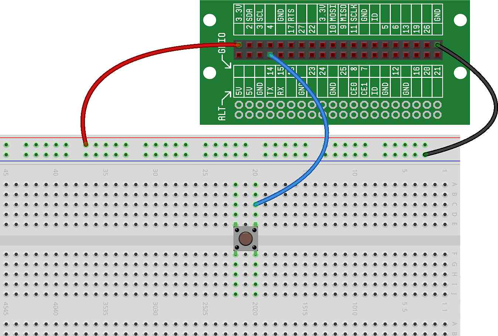
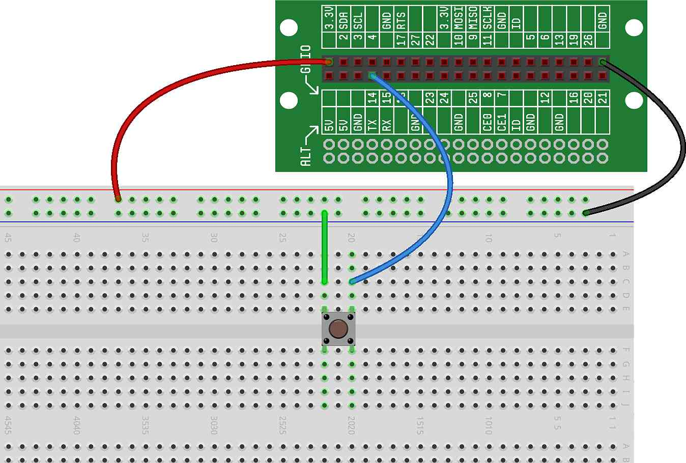

In this project, we will use a GPIO to read the state (pressed or
unpressed) of a button.
In , we introduced the idea of reading button
state based on using GPIOs as inputs. We also provided the schematic for the
circuit we'd need to accomplish this. It turns out that implementing that
circuit on our breadboard is easy. Let's give it a try...
Reading Buttons Using GPIOs.
First, we start with an empty breadboard, with power and ground wired from
the Lid Connector Board, like this:

With our breadboard empty, here is how we build our circuit and then use
code to get input from the button through the GPIO:
Place button on breadboard.
We start by placing a button on the breadboard. Remember, it is important
that the button is oriented correctly — the two independent sides of the
button must sit on different connect strips, as follows:
Also note, the button can be placed fully within a single row of connect
strips (as shown above), or it can be placed across the notch in the
breadboard, as we'll do in the next step. The choice only depends on where
you'd like to place the button.
Wire one side of the button to a GPIO.
Next, we connect one side of the button (it doesn't matter which one, as
the internal components of the button are symmetrical) to a GPIO. In this
example, we'll connect the button to GPIO14.

Wire the other side of the button to ground.
Finally, we connect the other side of the button to ground.

Note: The 3.3V power isn't being used for this circuit,
but it's always good to have power wired to the breadboard...and, we'll need
it later when we expand on this button circuit.
That's it for the wiring – pretty simple, right?
Now that the circuit is wired, we can write the code to get the GPIO state
(low or high):
In this most basic example, we are reading the GPIO a single time (the
moment the program is run) and we are printing the state of the button at
that moment. Try running the program a couple times, either holding down or
not holding down the button at the moment the program is run.
You may notice that this example is similar to the example, but in this case, we configure the GPIO as a button
instead of an output:
-
On Line 2, we're configuring GPIO14 as a button input.
-
On Line 3, we're getting the state of the button and printing it.
We'll look at these concepts again in more detail in upcoming
projects.
Why Button?
In , we discussed reading buttons using GPIO inputs. But now, in
this project, we're using Button to create our button variable instead of
Input. Why the change?
Button is just a special case of Input that provides
extra features for buttons. For example, instead of testing if the button input
is_on as we did in the
project, we instead tested if the button input
is_pressed.
For now, just know that we're using Button because we are
physically connecting up a button. In later projects, we'll discuss some of
the special features that
Buttons can use.
To make the program a little more interesting (and convenient!), we can
insert a loop so that, instead of just reading the state of the GPIO one
time, we can continually read and print the state of the GPIO for as long as
the program is running.
Here's what that code would look like:
Run this program and then alternate between pressing and not pressing the
button. Take a look at the output window — you should see an indication of
when the button is pressed and when it is released.
while True:
You may have noticed that we used a new programming concept above:
while True:
We'll discuss exactly how this works in a future project, but for now,
just know that using this line of code will force the block of code below
it to be repeated over and over, forever.
When you're done testing your button, you can stop the program by pressing
the square STOP icon in the upper-left-hand corner of the code window (this
icon replaced the PLAY icon while the program was running).